Přehled poptávky
Tarif a průběhový elektroměr
| Údaj (odběrné místo Komárkovi) | Hodnota |
|---|---|
| Distribuční sazba | D02d — jednotarif, veškerá spotřeba na VT (T1) |
| Hlavní jistič | 3×25 A |
| Třída TDD | 4 |
| Dodavatel / produkt | PRE — PRE PROUD PARTNER |
| Elektroměr | ZPA ZE314.D0B1B012-061, 2T, 3×230/400 V, 0,15-5(80) A, tř. A, rok 2018 |
| Roční spotřeba (5. 11. 2024 – 21. 10. 2025) | 3 317 kWh |
Po zprovoznění FVE hodlám přejít na spotový (dynamický) tarif — tuto část si řídím sám, není součástí dodávky.
Střecha — rozvržení panelů a rozměry
Jih — 2 varianty (obě 9 panelů)
Výběr varianty nechávám na firmě. Preferuji variantu s větším bočním odstupem od nároží — panely nastojato mají přirozeně menší boční odstupy a ty osobně nepreferuji.
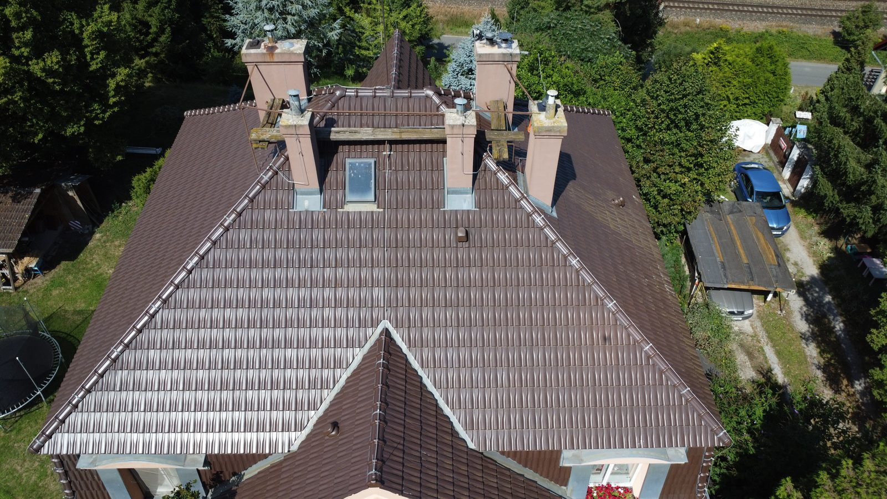
Varianta A — mix nastojato + naležato větší boční odstup
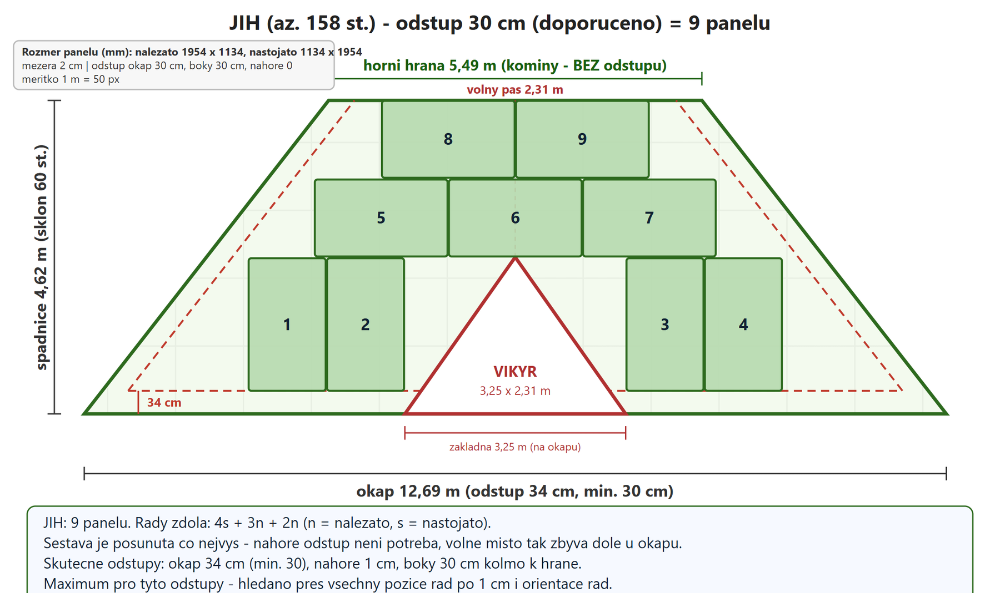
Větší boční odstup od nároží (50 cm). Tři výškové úrovně — více kotvení, robustnější rozložení.
Varianta B — vše nastojato, sraženo dolů méně kotvení
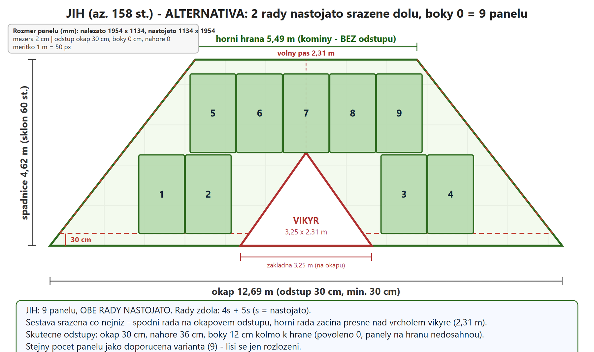
Dvě řady místo tří → méně nosníků a kotvicích prvků. Může vyjít levněji na montáž.
Západ — 10 panelů, odstup 15 cm
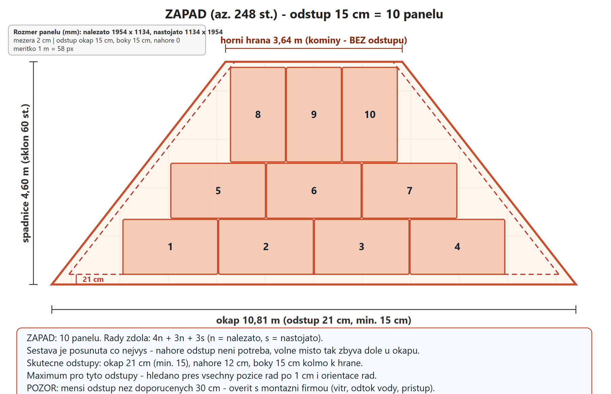
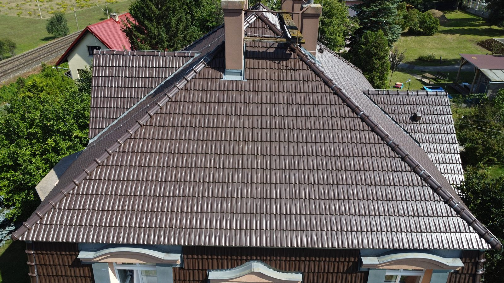
Východ — 9 panelů, odstup 20 cm
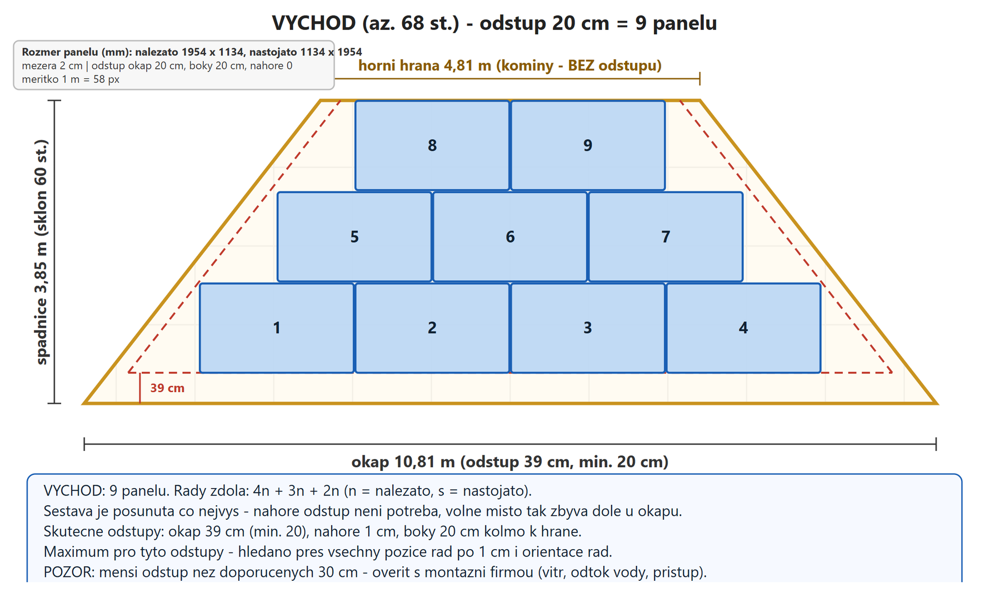
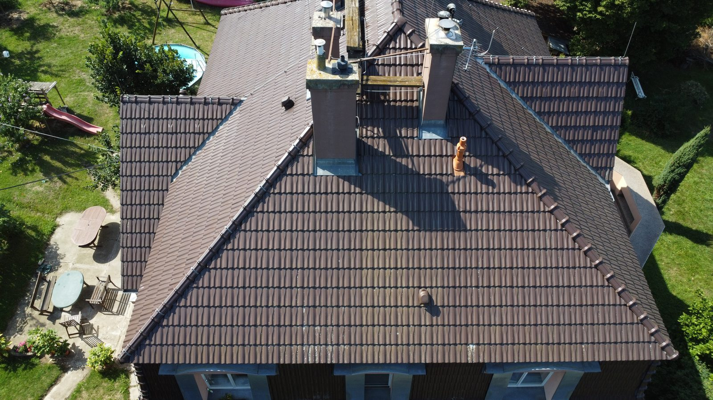
Co se tím mění: odhad roční výroby stoupá z ~11 520 na ~12 660 kWh (mírnější sklon je v našich zeměpisných šířkách výhodnější). Rozměry ploch, počet panelů (28) ani jejich rozvržení se nemění — délky spádnic byly měřeny po povrchu střechy, takže na výkladu úhlu nezávisí.
Pokud jste nabídku už rozpracovali s hodnotou 60°, omlouvám se za komplikaci.
Rozměry ploch
Sklony a azimuty jsou změřené z fotogrammetrického modelu (proložení rovin mračnem bodů), viz tabulka. Dřívější údaje 158 / 248 / 68° pocházely z kompasu a liší se o 2–3°, což je v mezích přesnosti obou metod. Horní hrana každé plochy leží u paty komínů — v nákresech komíny nejsou, protože rozvržení končí přesně na horní hraně bez dalšího přídavného odstupu. Fyzický odstup od komínů a střešních oken je cca 15–25 cm, daný oplechováním a šířkou okapu dlaždic — panely nesahají k samotné konstrukci komínu.
| Plocha | Azimut | Sklon | Okap (dole) | Horní hrana (u komínů) | Spádnice | Panely | kWp |
|---|---|---|---|---|---|---|---|
| Jih | 155° | 36,5° | 12,69 m | 5,49 m | 4,62 m | 9 | 4,5 |
| Západ | 246° | 35,5° | 10,81 m | 3,64 m | 4,60 m | 10 | 5,0 |
| Východ | 66° | 37,5° | 10,81 m | 4,81 m | 3,85 m | 9 | 4,5 |
| Celkem | 28 | 15,1 kWp | |||||
Hromosvod — vede přes všechny plochy nutno vyřešit
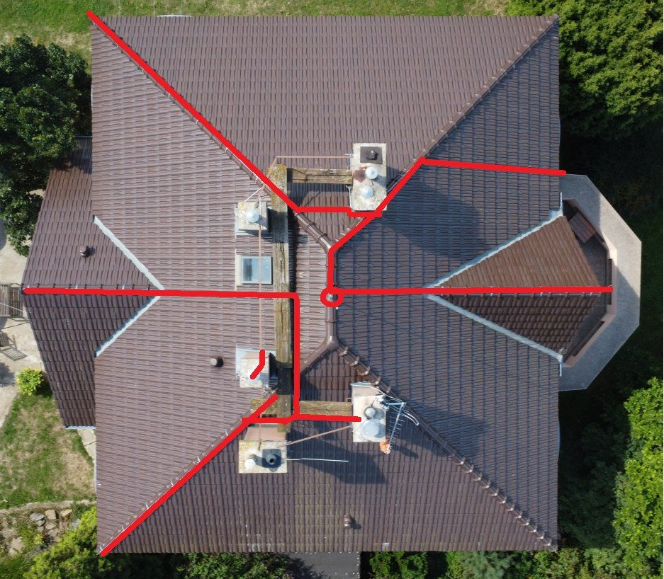
Prosím o vyjádření k těmto bodům — u každého uveďte konkrétní řešení, ne obecné ujištění:
| # | Otázka | Proč se ptám |
|---|---|---|
| H1 | Navrhujete řešení izolované (oddělené), nebo pospojené? | U pospojeného očekávám v rozpočtu SPD typu 1 na DC i AC straně a pospojení min. 16 mm² Cu. U izolovaného výpočet dostatečné vzdálenosti s dle ČSN EN 62305-3. |
| H2 | Jak vyřešíte místa, kde se panely přiblíží ke svodu nebo budou nad ním? | Přeložení svodu, jímací tyče, zkrácení řady panelů — co konkrétně a s jakým dopadem na počet panelů. |
| H3 | Posoudí váš revizní technik i stávající hromosvod jako celek? | Zajímá mě, jestli mi řekne i to, že stávající hromosvod je sám o sobě špatně — ne jen že vaše nová část je v pořádku. |
| H4 | Kdo nese odpovědnost za rozhraní FVE ↔ hromosvod? | Chci to mít od jednoho subjektu. Varianta „my připojíme a revizi si zařiďte sám" pro mě není přijatelná — pak za celek neodpovídá nikdo. |
| H5 | Je revize LPS po zásahu součástí ceny? | Jakákoli změna na jímací soustavě vyžaduje novou revizní zprávu. Uveďte ji jako samostatnou položku (sekce G rozpočtu). |
| H6 | Co když se ukáže, že hromosvod je potřeba upravit nebo přeložit? | Uveďte, zda to umíte dodat, nebo zda mám shánět samostatného projektanta LPS — a v jaké fázi to zjistíme. |
Podklady pro vlastní výpočet zastínění
Střechu i okolí jsme zaměřili dronem a pásmem. Níže jsou všechny podklady, které potřebujete k tomu, abyste si zastínění spočítali vlastním softwarem — kótovaný půdorys, prostorový model a strojově čitelný profil obzoru. Nemusíte nic doměřovat ani nic brát na slovo.
Kótovaný půdorys střechy
Rozměry jsou skutečné rozměry střechy z proložení mračna bodů z dronu — tedy včetně nárožních hřebenáčů. Nejsou to plochy pro panely, ty jsou o něco menší (viz upozornění pod výkresem).
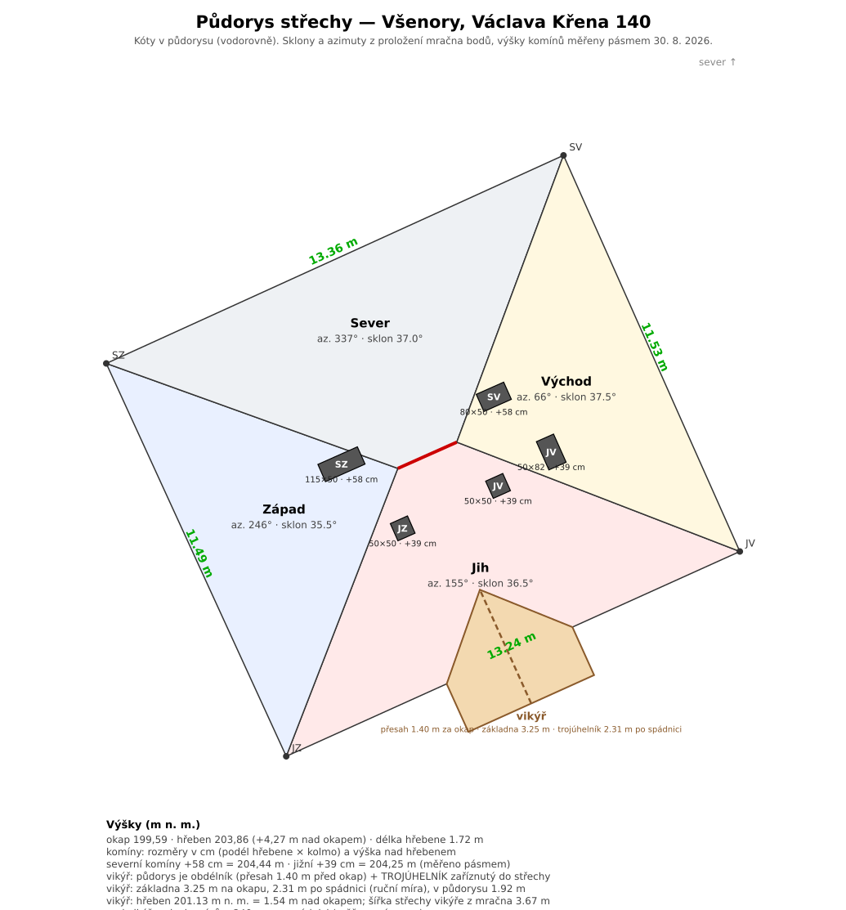
Okapové hrany: jih 13,24 m · západ 11,49 m · sever 13,36 m · východ 11,53 m.
Severní komíny +58 cm nad hřeben (204,44 m), jižní +39 cm (204,25 m).
Vikýř na jižní ploše přesahuje půdorys o 1,40 m, základna 3,25 m, zasahuje 2,31 m po spádnici.
Prostorový model — střecha a okolní překážky
Model je kreslený ze změřených čísel, ne mračno bodů. Sousední zástavba a porost jsou schematické kvádry, koule a kužely v zaměřených polohách a výškách — kreslíme je proto, že právě ony stíní. Fotografie cizích pozemků nezveřejňujeme.
Panely v modelu záměrně nejsou. Jejich rozmístění je vztažené k ploše pro panely, ne k rozměrům střechy, a v modelu domu by jen mátlo. Závazné je rozmístění panelů výše.
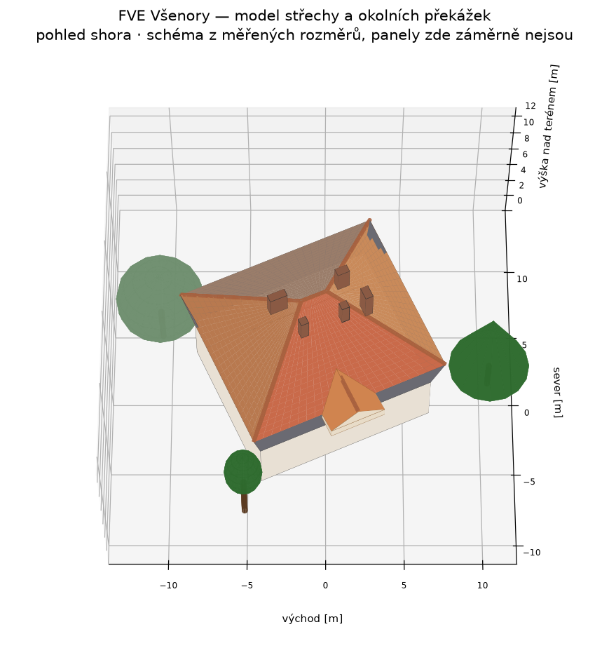
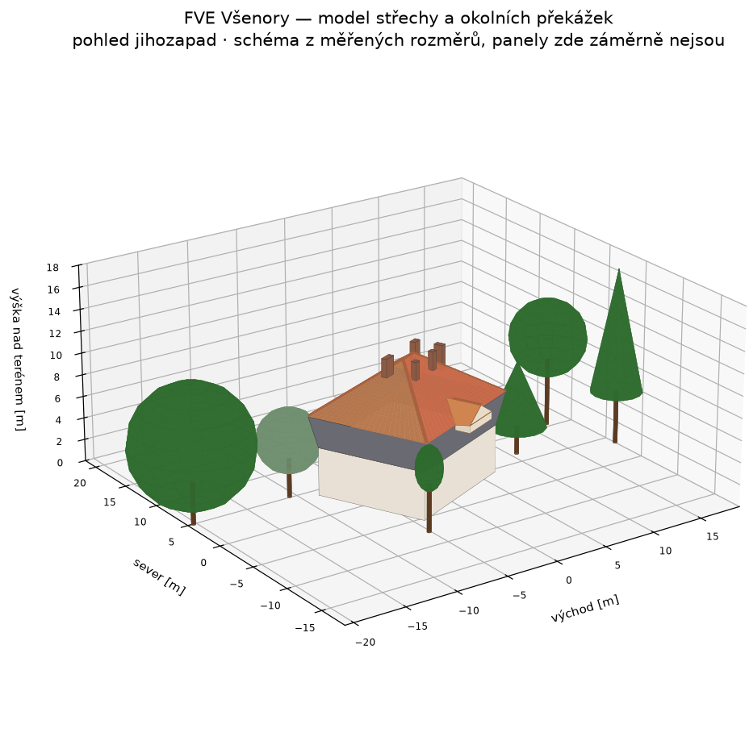
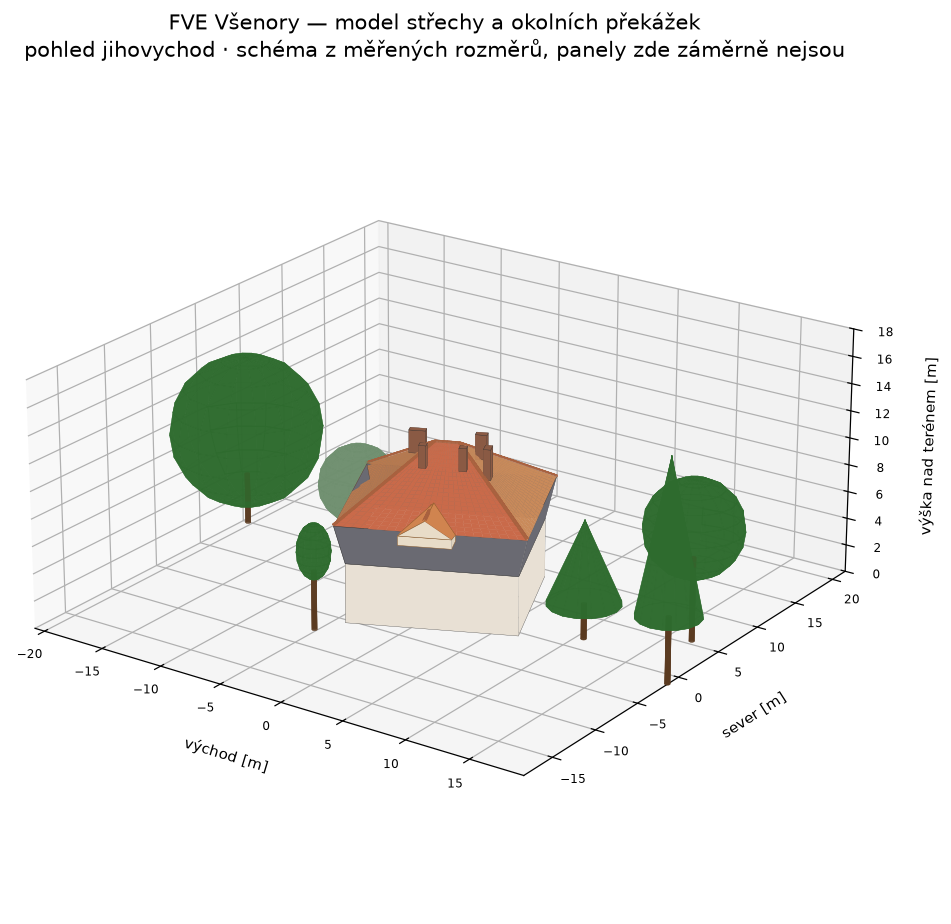
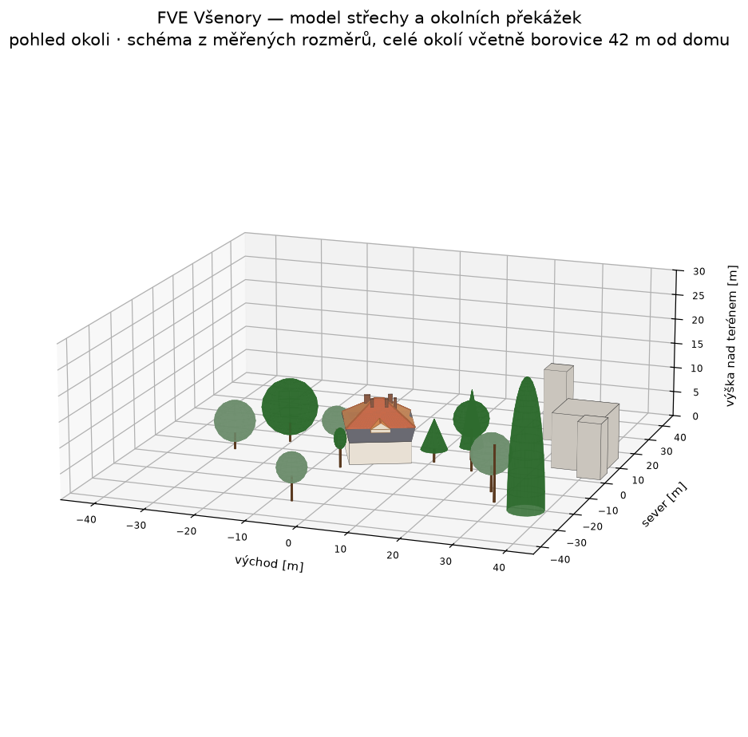
Vikýř je v modelu zakreslený tak, že jeho střecha zasahuje 2,39 m po spádnici, zatímco pro panely platí 2,31 m. Hřebenáč vikýře totiž nesahá až k hlavní střeše, takže panelům nepřekáží. Pro rozmístění panelů platí 2,31 m.
Zaměřené překážky
Výšky jsou ověřené třemi nezávislými způsoby — proložením mračna bodů z dronu, zpětným výpočtem z délky vrženého stínu na fotografii se známým časem, a přímým náletem dronu do úrovně vrcholu. Shoda mezi metodami je 0,1 až 0,6 m.
| Překážka | Azimut | Vzdálenost | Vrchol | Nad okapem | Úhel od okapu |
|---|---|---|---|---|---|
| Lípa | 76° | 18,0 m | 204,0 m n. m. | +4,5 m | 13,9° |
| Smrk | 97° | 20,0 m | 208,5 m n. m. | +8,9 m | 24,1° |
| Borovice | 121° | 43,0 m | 217,9 m n. m. | +18,4 m | 23,1° |
| Habr | 281° | 20,0 m | 204,9 m n. m. | +5,3 m | 14,8° |
Data ke stažení
obzor_vsenory.csv — profil obzoru po 2° azimutu, zvlášť pro každou ze tří ploch, počítaný z těžiště jejího pole panelů. Vlastní dům je vymaskován, takže jsou v něm jen překážky v okolí — stín vlastních komínů a hřebene si doplňte z kótovaného půdorysu.
prekazky_vsenory.csv — zaměřené stromy s azimutem, vzdáleností, výškou vrcholu a poloměrem koruny. Vše vztaženo ke středu střechy.
Poloha: 49,9335° N · 14,3100° E, okap 199,59 m n. m.
Nákresy rozmístění panelů ve vektorovém formátu (SVG) — otevřete v CADu nebo v prohlížeči, kóty jsou v metrech:
- pudorys_strechy_kotovany.svg — kótovaný půdorys střechy
- strecha_JIH_odstup30.svg — Jih, varianta A (mix)
- strecha_JIH_boky0_nastojato_dolu.svg — Jih, varianta B
- strecha_ZAPAD_odstup15.svg — Západ
- strecha_VYCHOD_odstup20.svg — Východ
{kind=link}
{kind=link}
{kind=link}
{kind=link}
{kind=link}
Prostorový model domu a okolí — dům, mansarda, všechny čtyři střešní plochy, hřebenáče, vikýř, pět komínů, zaměřené stromy i sousední zástavba. Postavený ze změřených rozměrů, ne z mračna bodů, takže je čistý a rovnou měřitelný. Souřadnice v metrech, X na východ, Y na sever, Z vzhůru, nula na terénu u domu:
- model_vsenory.stl — binární STL, načte každý 3D program i PV*SOL či Aurora
- model_vsenory.dxf — DXF s entitami 3DFACE rozdělenými do vrstev (STRECHA_JIH, STRECHA_ZAPAD, STRECHA_VYCHOD, KOMINY, VIKYR, STROMY_ZAMERENE, SOUSEDNI_ZASTAVBA…) — pro AutoCAD, BricsCAD, ZWCAD
- model_vsenory.obj — OBJ s pojmenovanými skupinami, pro Blender či SketchUp
fusion360_strecha.py — skript pro Autodesk Fusion 360, který model postaví parametricky (sklon, azimuty a rozměry jsou pojmenované parametry, dají se přenastavit). Užitečné jen pokud ve Fusionu pracujete — jinak použijte STL nebo DXF výše.
Zastínění — vlastní závěr zde záměrně neuvádím
Vše je v sekci Podklady pro vlastní výpočet zastínění výše.
Co od vás k zastínění potřebuji
- Kolik ztratíme zastíněním? Prosím po plochách (Jih / Západ / Východ), ideálně i po panelech.
- Které panely jsou nejhorší a v jakých hodinách a měsících se to děje?
- Vyplatí se optimizéry? Na kterých plochách a kolik kusů, proti jakému doplatku oproti prostým odpojovačům, a jaká je návratnost?
- Jak do rozhodnutí počítáte poruchovost — každý optimizér je aktivní prvek na střeše, kam se špatně leze?
- Mění na tom něco volba panelů? (Např. AIKO ABC uvádí TÜV certifikaci Partial Shading Class A — má to praktický dopad?)
- Jakým softwarem jste to počítali?
Technická specifikace
Fotovoltaické panely
| Parametr | Požadavek |
|---|---|
| Počet | 28 kusů |
| Výkon | 540 Wp / panel — 15,1 kWp celkem (dřívější zadání znělo min. 500 Wp / 14,0 kWp — už neplatí) |
| Technologie | N-type (TOPCon / HJT / PERC min. Tier 1) — zákazník nespecifikuje značku, výběr na firmě |
| Záruka výkonu | min. 25 let |
| Certifikace | CE, IEC 61215, IEC 61730 |
| Rozměr | Cca 1954 × 1134 mm (resp. tomu odpovídající). Jiné rozměry konzultovat — ovlivňují počet panelů. Preferuji panely nepřesahující cca 2000 × 1140 mm — na členité střeše (vikýř, více ploch) se větší formáty hůře skládají tak, aby efektivně vyplnily dostupný prostor. |
Hybridní měnič
| Parametr | Hodnota |
|---|---|
| Model | Deye SUN-15K-SG05LP3-EU |
| Výkon AC | 15 kW, 3-fázový |
| Komunikace | WiFi (SolarmanV5 lokální protokol), RS485, CAN |
Stringy — 3 světové strany
Požaduji garanci připojení všech tří světových stran (Jih, Západ, Východ) — každá jako samostatný string. Prosím firmu o navržení optimálního zapojení na MPPT vstupy Deye 15K a o přípravu pro případné budoucí rozšíření.
Rapid Shutdown
Rapid Shutdown systém na DC straně — modul-level nebo string-level dle doporučení firmy. Umístění nouzového tlačítka u vstupních dveří.
Smart měřič (měřič přetoků)
Deye kompatibilní 3-fázový smart meter na hlavní přívod (pro zero-export a asymetrické řízení). Součástí dodávky firmy.
Sloučení odběrných míst
Na pozemku jsou 2 odběrná místa u ČEZ Distribuce Praha Západ. Požaduji kompletní asistenci se sloučením do jednoho OM — podání žádosti, dokumentace, komunikace s distributorem.
| Parametr | Hodnota |
|---|---|
| Tarif | D02d (oba OM) |
| Jistič na novém OM | 3× 25 A |
| Distributor | ČEZ Distribuce — Praha Západ |
Baterie — dvě varianty
Varianta A — Komerční baterie
- Baterie ze seznamu Deye Approved Battery List (DY-LV48-0109)
- Preferováno: Pylontech US5000 nebo Force L2, BYD, Fox ESS, JINKO, nebo jiná z certifikovaného seznamu
- Kapacita: min. 10 kWh (doporučeno 15–20 kWh pro poměr cena/výnos)
- Firma dodá, zapojí, nakonfiguruje, zajistí revizi a připojení k distributorovi
Varianta B — vlastní baterie (Wattery Smart 16 kWh)
- Petr Komárek dodá baterii Wattery Smart 16 kWh (LFP, EVE články, česká výroba, Low Voltage)
Certifikace: CE, IEC 62619, IEC 61000 · splňuje vyhlášku č. 114/2023 Sb. a normu ČSN 33 2130 ed. 4 i během provozu - Petr Komárek dodá kompletně sestavenou, otestovanou, nabitou baterii
- Podmínka: Firma musí potvrdit, že zajistí revizi elektroinstalace s touto baterií a připojení k distributorovi (PPP/UTP)
- Firma zapojí DC kabely a komunikaci BMS → Deye 15K, nastaví měnič tak, aby fungoval s dodanou baterií.
- Firma nenese odpovědnost za kvalitu baterie, pouze za zapojení
- Součástí předání: test ostrovního režimu — simulace výpadku napájení z distribuce při plné zátěži záložního okruhu (1. patro)
Prosím o nacenění obou variant — Varianta A s konkrétním modelem baterie, Varianta B s cenou za zapojení a nastavení zákazníkovy baterie.
Rozsah dodávky
✅ Co firma dodá a provede
- 28 FV panelů 540 Wp (Tier 1, N-type) — 15,1 kWp
- Nosná konstrukce, kotvení, montáž na střechu
- Měnič Deye SUN-15K-SG05LP3-EU
- Baterie — dle zvolené varianty (A nebo B)
- DC kabeláž (3 stringy), MC4 konektory
- Rapid Shutdown systém + nouzové tlačítko
- AC kabeláž měnič → rozvaděč
- 3-fázový smart meter na hlavní přívod
- Podružný elektroměr pro měření spotřeby — 3-fázový, stačí nekalibrovaný, s displejem. Možnost napojení na Home Assistant (Modbus RS485 / LAN) je výhodou.
- Jistič a ochranné prvky FVE (SPD, RCD dle ČSN)
- AC rozvaděč FVE s rezervou min. 12 volných DIN pozic — z toho 8 souvisle vedle sebe, plus volný prostor a průchodka pro budoucí přívod. Součástí nabídky je vyplněná tabulka osazení — viz kapitola „Obchodní podmínky → Osazení AC rozvaděče".
- Výchozí revize elektroinstalace dle ČSN
- Revize FVE dle ČSN EN 62446
- Nahlášení FVE distributorovi, PPP/UTP
- Sloučení 2 odběrných míst (ČEZ Distribuce)
- Základní nastavení měniče (provoz on-grid, backup)
🚫 Co firma nedodává (zákazník si řeší sám)
- Bojlery — Petr Komárek si zajistí vše kompletně sám: fyzické osazení, hydrauliku, elektrické napojení i smart řízení. FVE dodavatel se chová, jako by o bojlerech nevěděl a neměl je na starosti. Jediná dohoda: v rozvaděči v přízemí bude ponecháno volné místo pro 6 DIN pozic, které Petr Komárek využije pro řízení bojlerů a zásobníkového ohřevu.
- Home Assistant — provozuji vlastní Home Assistant; napojení na měnič (SolarmanV5 lokální API / Modbus) si konfiguruji sám. Asistence a předání know-how od instalační firmy je výhodou.
- WATTrouter ani žádné jiné proprietární řízení přetoků
- Uzavřené chytré řízení (Cubee, Infigy, Deye SPOT AI Copilot) — viz sekce Home Assistant níže
- Příprava na wallbox / nabíjení elektromobilu — vypuštěno, nenaceňujte kabeláž, jištění ani samotnou nabíječku.
Jediná výjimka: volné místo v AC rozvaděči. Nabíječku si možná pořídím za pár let a nechci kvůli ní měnit skříň. Proto požaduji 8 volných DIN pozic souvisle vedle sebe (3f jistič 3 M + proudový chránič typu B 4 M + 1 M rezerva na stykač HDO) a volný prostor s průchodkou pro budoucí přívod. Spolu s další rezervou to dává celkem 12 volných pozic — rozpis v kapitole „Osazení AC rozvaděče". Žádné další náklady na wallbox v nabídce nechci. - Chytré řízení bojlerů — řeším si sám přes Home Assistant (viz výše)
- Klimatizace / multisplit — řeším samostatnou poptávkou, s FVE ji nespojuji
Elektrická infrastruktura — existující rozvody a rozvaděče
Objekt má dvě domácnosti (přízemí — Charvátovi, 1. patro — zákazník) s vlastními rozvaděči a dvěma odběrnými místy. Níže jsou základní informace potřebné pro návrh AC propojení FVE, revizi a sloučení OM.
Schéma objektu
| Místo | Popis | Odběrné místo |
|---|---|---|
| Elektroměrová skříň — vstupní hala | Stará dřevěná skříň u vchodových dveří, volně přístupná (uvnitř domu). Elektroměry obou OM, hlavní jističe, přívod ČEZ. Vnitřní rozměr: 135 × 55 × 26,5 cm. Odtud vedou 3 samostatné přívody. | OM 1 + OM 2 |
| Sklep (R2) | Přívod 1 — 4×10 mm² Cu (TN-C), rozdělení PEN→TN-S provedeno zde. Místo instalace invertoru Deye 15K a baterie. | OM 2 (zákazník) |
| 1. patro (zákazník, R1) | Přívod 2 — 4×10 mm² Cu (TN-C) samostatným kabelem z elektroměru, NE ze sklepa. Rozdělení PEN→TN-S provedeno až v R1. | OM 2 |
| Přízemí (Charvátovi) | Přívod 3 — samostatný kabel z elektroměru. Starší instalace: jističe ze 70. let + novější podružný rozvaděč s RCD pro koupelnu. Průřez a počet žil neověřeny. | OM 1 |
Elektroměrová skříň — vstupní hala (volně přístupná)
Jsem si vědom, že při žádosti o připojení FVE bude pravděpodobně nutné doložit žádost o výjimku z požadavku na přemístění elektroměrů do venkovního pilíře. Přemístění do kapličky je pro mě nákladné a nechci ho — proto je to pro výběr firmy podstatné kritérium.
Uveďte prosím konkrétně:
- Kolik takových případů jste řešili?
- Jakou máte úspěšnost při vyřizování těchto výjimek?
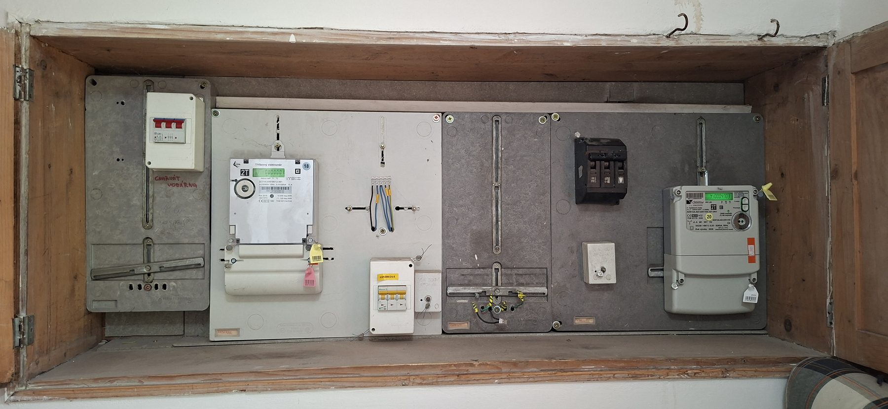
Celkový pohled na obsah skříně: vlevo nezapojený zbytek po vodárně, uprostřed elektroměr Komárkovi (ZPA) a přívod Komárkovi, vpravo elektroměr Charvátovi (Daisy)
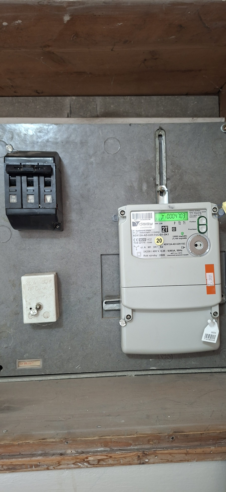
Elektroměr Charvátovi — Daisy ADX12A-AD-U2H-V2C-G1-OK1, 2T, 3×230/400 V, 0,25-5(80) A, rok 2020
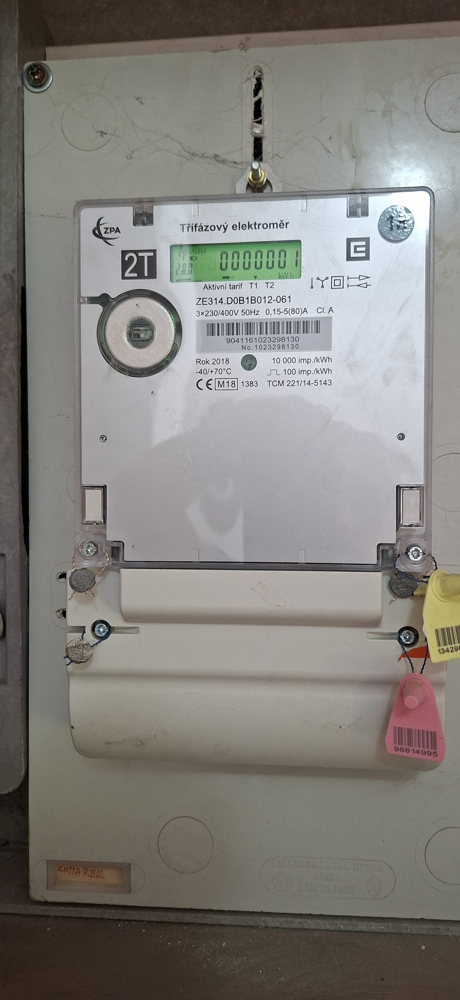
Elektroměr Komárkovi — ZPA ZE314.D0B1B012-061, 2T, 3×230/400 V, 0,15-5(80) A, rok 2018
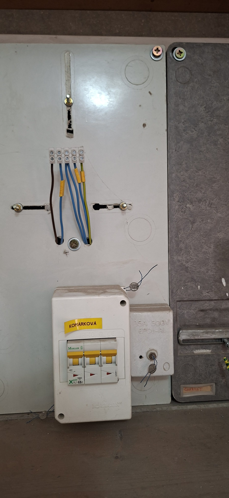
Přívod Komárkovi — svorkovnice + Moeller XPOLE
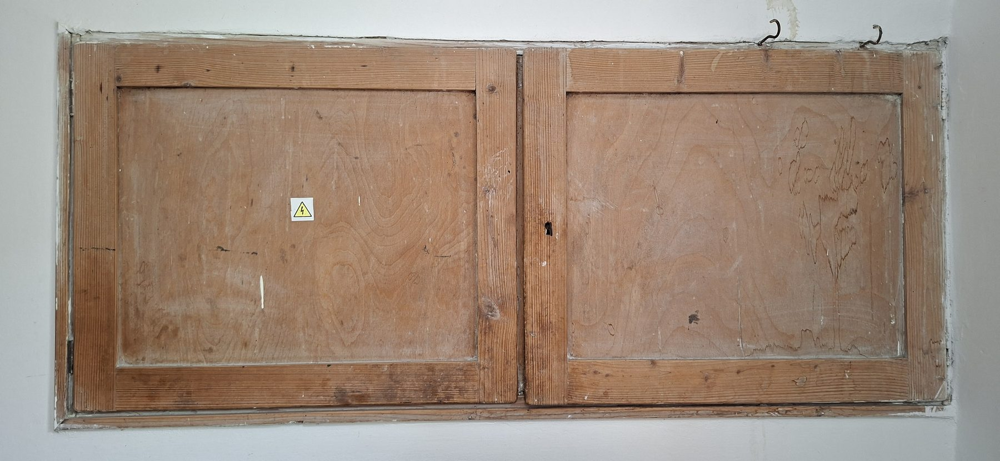
Skříň zavřená — dřevěné dvoudveřové pouzdro ve zdi
Klíčové parametry
| Parametr | Hodnota |
|---|---|
| Umístění | Vstupní hala uvnitř domu, u vchodových dveří |
| Přístup pro ČEZ | Bez odemčení domu se ČEZ k elektroměrům nedostane. Není kaplička na hranici pozemku → nutná výjimka |
| Vnitřní rozměr | 135 × 55 × 26,5 cm (š × v × h) |
| Elektroměr Komárkovi | ZPA ZE314.D0B1B012-061, 2T, 3×230/400 V, 0,15-5(80) A, tř. A, rok výr. 2018 |
| Elektroměr Charvátovi | Daisy ADX12A-AD-U2H-V2C-G1-OK1, 2T, 3×230/400 V, 0,25-5(80) A, tř. A, rok výr. 2020 |
| Přívod „Charvát, vodárna" | Nezapojený — pozůstatek. Vodárna je nově napojená v podružném rozvaděči ve sklepě. |
| Přívod Komárkovi | Svorkovnice + Moeller XPOLE — odtud kabel do sklepa |
| Vodárna (čerpadlo) | Samostatný jistič v sekci Charvátovi |
Zákazník předpokládá, že ČEZ vymění elektroměr Komárkovi za průběhový (4Q) při vydání PPP/UTP. Firma FVE navrhne, zda je třeba cokoliv dalšího upravit v této skříni.
Rozvaděč ve sklepě (R2) — místo instalace invertoru
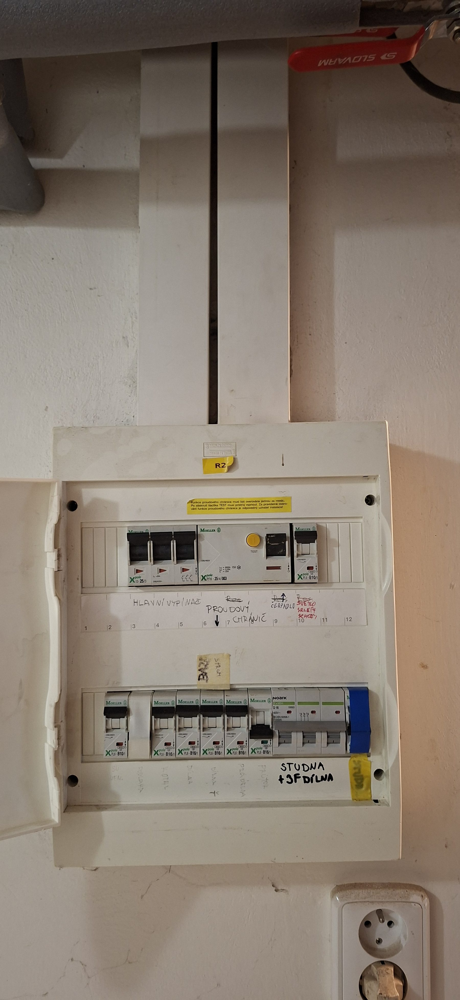
Celkový pohled — R2, STUDNA+dílna, přízemí Charvátovi
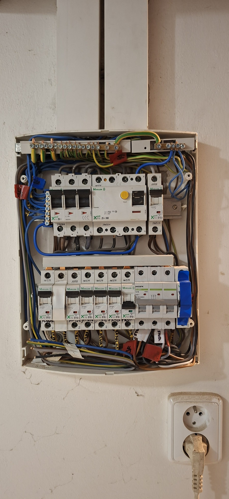
Obsah s kabeláží — PE/N svorkovnice, RCD, okruhové jističe
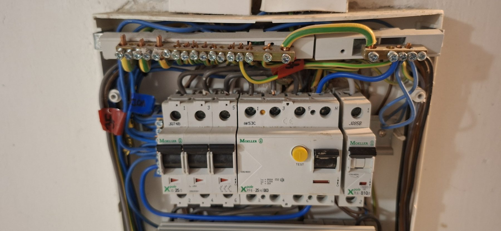
Detail — 3f hlavní jistič 25A, RCD PF6-25/4/003 (30 mA), B10 okruhové
Klíčové parametry R2
| Parametr | Hodnota |
|---|---|
| Označení | R2 — podružný rozvaděč sklep |
| Kabel elektroměrová skříň → R2 | 4×10 mm² Cu (TN-C, přívod) |
| Rozdělení PEN → TN-S | Provedeno v R2 na svorkovnici (PE + N odděleny zde) |
| Hlavní jistič | Moeller XPOLE 25A / 3-pólový |
| RCD | Moeller XPOLE PF6-25/4/003 — 25A, 4-pól, 30 mA |
| Okruhy | Studna, dílna (3f), pračka, dílna, kotel, podlaha, průtok |
| Umístění invertoru | Těsně vedle R2 — krátká trasa AC kabelů |
| Vazba na 1. patro | ŽÁDNÁ — 1. patro má samostatný přívod přímo z elektroměru, nejde přes R2 |
Firma FVE posoudí, zda AC výstup měniče Deye 15K (3×25A = 17,3 kW) vejde do stávajícího přívodu 4×10 mm² Cu s jističem 25A, nebo zda je třeba přívod zesílit. Pozor: 1. patro není napájeno z R2 — má vlastní přívod z elektroměru (viz schéma výše).
Uveďte prosím ve své nabídce: jaké jsou možnosti a co by to obnášelo (nový kabel, trasa, cena).
Rozvaděč v přízemí (Charvátovi) — samostatný přívod, starší instalace
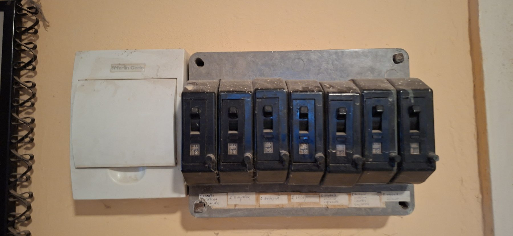
Původní instalace ze 70. let — 7 pákových jističů + novější Merlin Gerin skříňka
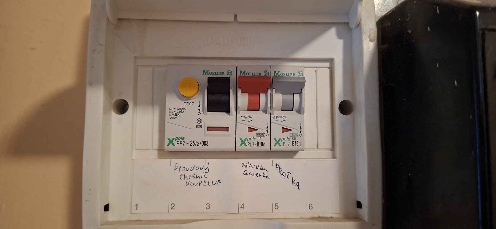
Novější podružný rozvaděč — RCD koupelna, zásuvka balkon, pračka
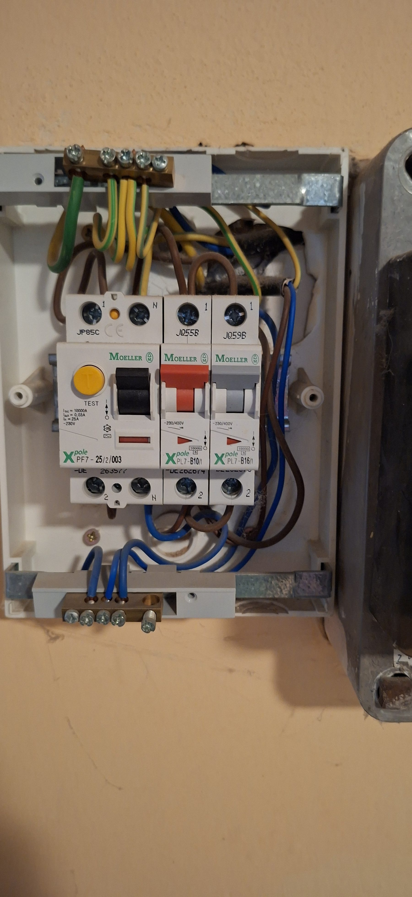
Obsah — Moeller PF7-25/2/003, PL7-B10, PL7-B16
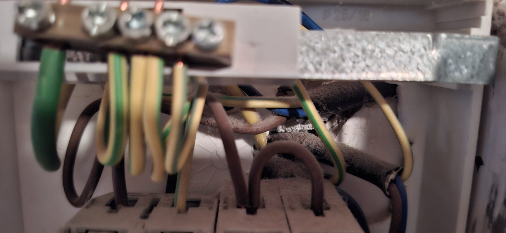
Detail svorkovnice — přívod chráničkou ⌀25/16, staré textilní izolace
Klíčové parametry — přízemí
| Parametr | Hodnota |
|---|---|
| Odběrné místo | OM 1 (Charvátovi) — jiné OM než zákazník |
| Přívod z elektroměru | Samostatný kabel. Průřez i počet žil NEOVĚŘENY (4×6? jiný?) |
| Systém uzemnění | Pravděpodobně TN-C u staré části (nutno ověřit revizním technikem) |
| Původní instalace | 70. léta — 7 pákových jističů: chodba/schody, koupelna, kuchyň, WC, ložnice, pokoj, světla |
| Novější rozvaděč | Moeller: RCD PF7-25/2/003 (25A, 2-pól, 30 mA) + PL7-B10 + PL7-B16 |
| Chráněné okruhy (RCD) | Koupelna, zásuvka balkon, pračka |
| Průchodka přívodu | Chránička ⌀25/16 mm |
Firma tuto instalaci neupravuje. Informace slouží k posouzení stavu objektu a k odhadu rozsahu prací, pokud by v budoucnu došlo ke sloučení odběrných míst.
Rozvaděč v 1. patře — zákazník (R1, TN-S)
Ale pozor: pokud bude záloha 1. patra realizována, bude to vyžadovat zásah do přívodu tohoto rozvaděče — 1. patro má samostatný přívod z elektroměru a s R2 (kde bude invertor) není propojeno. Řešení je předmětem nabídky (viz otázka u R2 výše).
Přívod do R1 — 4×10 mm² Cu (TN-C), rozdělení na TN-S až zde
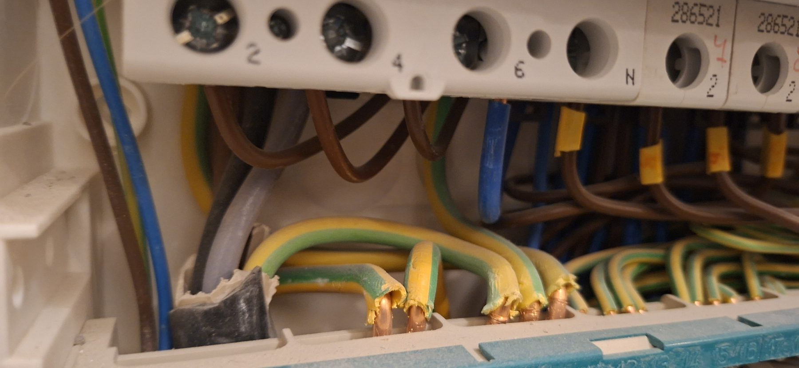
Detail přívodu — 4 vodiče (3× fáze hnědá/šedá + PEN modrá), PE svorkovnice vpravo dole
| Parametr | Hodnota |
|---|---|
| Kabel elektroměr → R1 | 4×10 mm² Cu |
| Změřený průměr vodiče | 3,5 mm → průřez 9,6 mm² → řada 10 mm² |
| Systém na přívodu | TN-C (4 vodiče: L1, L2, L3, PEN) |
| Rozdělení PEN → PE + N | Provedeno až v R1 na svorkovnici |
| Systém za rozdělením | TN-S (celý byt v 1. patře) |
| Trasa | Přímo z elektroměrové skříně, nejde přes sklep ani přízemí |
Přívod má stejný průřez i systém jako přívod do sklepa (R2) — obě větve jsou 4×10 mm² Cu, TN-C, s rozdělením na TN-S až v cílovém rozvaděči.
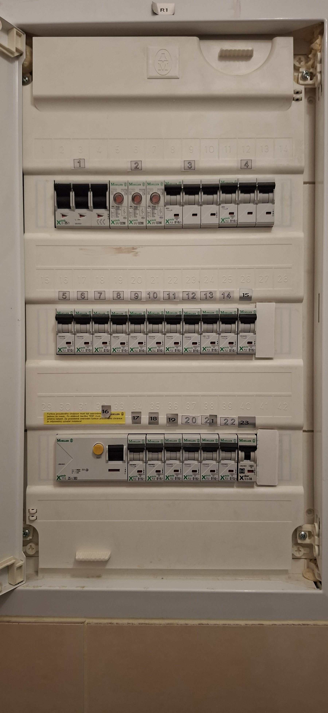
Celkový pohled — R1, 23 pozic + prostor
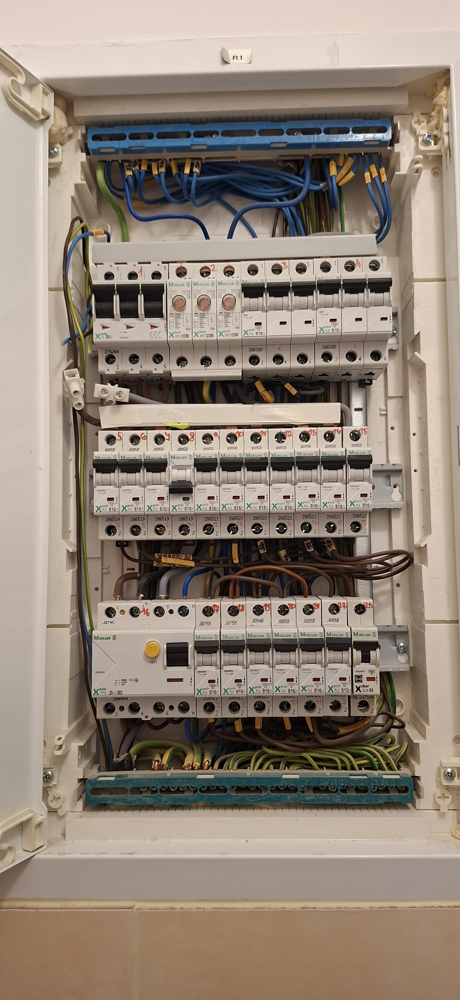
Obsah rozvaděče — jističe Moeller, RCD na poz. 16
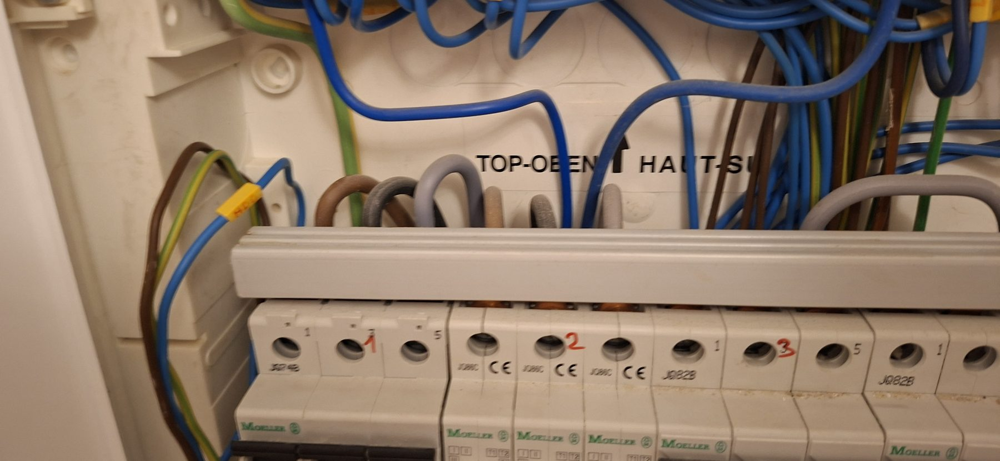
Detail jističů — Moeller, horní lišta
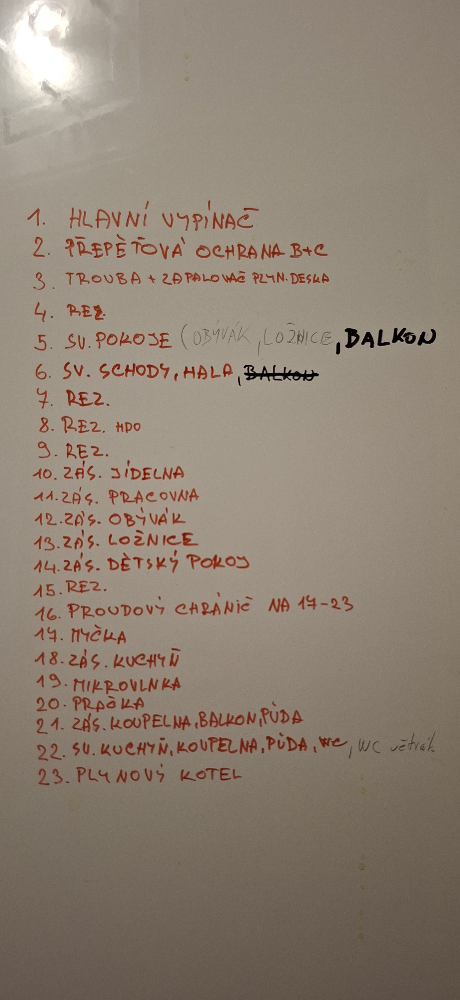
Popis okruhů (ruční záznam)
Přehled okruhů R1
| Poz. | Okruh | Poznámka |
|---|---|---|
| 1 | Hlavní vypínač | |
| 2 | Přepěťová ochrana B+C | |
| 3 | Trouba + zapalovač + plynová deska | |
| 4 | — | volný |
| 5 | Sv. pokoje (obývák, ložnice, balkon) | |
| 6 | Sv. schody, hala | |
| 7 | — | volný |
| 8 | HDO (přivedený z elektroměru, nikdy nepoužitý) | rezerva pro budoucí použití |
| 9 | — | volný |
| 10 | Záš. jídelna | |
| 11 | Záš. pracovna | |
| 12 | Záš. obývák | |
| 13 | Záš. ložnice | |
| 14 | Záš. dětský pokoj | |
| 15 | — | volný |
| 16 | Proudový chránič (RCD) — jistí okruhy 17–23 | TN-S, chrání vlhké provozy |
| 17 | Myčka | |
| 18 | Záš. kuchyň | |
| 19 | Mikrovlnka | |
| 20 | Pračka | |
| 21 | Záš. koupelna, balkon, půda | |
| 22 | Sv. kuchyň, koupelna, půda, WC, WC větrák | |
| 23 | Plynový kotel | |
| + | Zákazník doplní: spínací okruh bojler (Shelly relé, Home Assistant) | do volné pozice (4, 7, 9 nebo 15) |
Podmínky pro připojení Home Assistant
Zákazník provozuje vlastní systém Home Assistant pro řízení FVE, bojlerů a dalších spotřebičů. Systém je plně funkční a bude napojen na měnič Deye lokálně — bez závislosti na cloudu.
-
Volný SolarmanV5 lokální protokol (WiFi/LAN, port 8899)
WiFi dongle měniče (LSW-3 nebo WiNet-S, součást dodávky Deye) musí fungovat v lokálním režimu. Zákazník se k němu připojí přes LAN přes integraci ha-solarman bez nutnosti cloudu. Firma nesmí nakonfigurovat dongle způsobem, který blokuje lokální přístup. -
RS485 port — sdělit, co na něj firma zapojí
Deye 15K má více RS485/COM portů. Pokud firma použije RS485 pro smart meter, uvede do dokumentace, který port použila a který zůstává volný pro zákazníka (Modbus RTU přístup z Home Assistant). -
Žádné uzavřené řízení bez souhlasu zákazníka
Firma nesmí nainstalovat Cubee, Infigy, Deye SPOT, AI Copilot ani žádný jiný proprietární řídicí systém, který by obsadil komunikační porty měniče nebo vyžadoval exkluzivní přístup. Pokud firma takový systém používá, musí předem konzultovat a zákazník musí písemně souhlasit. -
Dokumentace komunikačních portů
Firma předá zákazníkovi seznam: který port měniče (COM1/COM2/CAN) je zapojen na co (smart meter / baterie / volný). Zákazník to potřebuje pro konfiguraci Home Assistant. -
Základní nastavení měniče
Firma nastaví základní parametry (provoz on-grid, zero-export, backup priorita), vše ostatní (spot tarif, řízení bojlerů, optimalizace) si zákazník nakonfiguruje sám přes Home Assistant.
Prosba: pokud budete do sklepa vést kabelovou chráničku (pro AC/DC nebo komunikaci), dejte mi vědět — rád bych LAN protáhl stejnou trasou a vyhnul se druhému vrtání.
- Provádíte vzdálený monitoring měniče? Pokud ano, jakým způsobem je zabezpečeno připojení — jak je zajištěno, že nedojde k neoprávněnému přístupu (hacknutí) přes toto napojení?
Součinnost zákazníka — co firma může očekávat
Zákazník je technicky zdatný, aktivně se zapojí do projektu a klade důraz na transparentnost a kontrolu. Chce vědět, co, kdy a proč.
- K dispozici pro místní šetření — termín dohodnu co nejdříve
- Zajistím přístup do technické místnosti (sklep) a přístup na pozemek pro techniku
- Střešní lávky nechám před zahájením instalace vyměnit za nové — nemusíte je řešit ani zahrnovat do nabídky
- Fotodokumentace instalačního místa je přiložena v této poptávce
- Home Assistant si zprovozním sám — firma nemusí Home Assistant konfigurovat
- LAN přípojku do sklepa (k měniči) zajistím sám před instalací — pokud povedete do sklepa chráničku, uvítám informaci, ať mohu využít stejnou trasu
- V případě Varianty B: Petr Komárek dodá baterii Wattery Smart 16 kWh — kompletně sestavenou, otestovanou a nabitou — na místě instalace
- Bojlery jsou kompletně mimo dodávku FVE — řeším si je sám, viz sekce Rozsah dodávky
- Požaduji průběžnou komunikaci — klíčové kroky konzultovat před realizací, ne po
Obchodní podmínky a požadavky na nabídku
Položkový rozpočet (povinný)
U každé položky prosím uveďte množství × jednotkovou cenu a konkrétní typ/model. Položky, které nepotřebujete, škrtněte a napište proč — nevadí mi kratší rozpočet, vadí mi nejasný.
A. FV pole — střecha (DC)
| # | Položka | Co upřesnit |
|---|---|---|
| A1 | FV panely (28 ks) | Výrobce, model, Wp, účinnost, cena/ks |
| A2 | Nosná konstrukce | Výrobce, typ profilu, materiál (Al/nerez) |
| A3 | Kotvení do krokví — háky | Počet kusů, typ, způsob těsnění pod taškou |
| A4 | Prostupy střechou + utěsnění | Počet, typ prostupky, kdo ručí za těsnost |
| A5 | Stringová DC kabeláž na střeše | Délka [m], průřez, solární kabel, MC4 konektory |
| A6 | Pospojování a uzemnění konstrukce | Průřez, napojení na stávající hromosvod |
| A7 | Optimizéry / odpínače na modul | Pokud navrhujete: typ, počet ks, na které panely a proč |
B. DC rozvod — střecha → měnič
| # | Položka | Co upřesnit |
|---|---|---|
| B1 | DC rozvaděč | Počet stringů, krytí, umístění |
| B2 | DC přepěťová ochrana (SPD) | Typ 1+2 / typ 2, výrobce |
| B3 | DC odpínač / pojistky | Jmenovité hodnoty; u 2 paralelních stringů na MPPT1 uveďte, zda pojistky považujete za nutné |
| B4 | DC kabeláž do měniče | Délka [m], průřez, trasa (kudy povede) |
C. Měnič a baterie
| # | Položka | Co upřesnit |
|---|---|---|
| C1 | Měnič Deye SUN-15K-SG05LP3-EU | Včetně WiFi donglu; uveďte i cenu bez donglu |
| C2 | Baterie — Varianta A | Model, kapacita, počet modulů, cena/modul |
| C3 | Baterie — Varianta B | Cena za zapojení zákazníkovy baterie (bez dodávky článků) |
| C4 | Bateriová kabeláž + jištění | Průřez, délka, DC odpínač/pojistka, komunikační kabel BMS |
| C5 | Skříň / stojan baterie, uchycení | Pokud je součástí |
D. AC strana
| # | Položka | Co upřesnit |
|---|---|---|
| D1 | AC kabeláž měnič → rozvaděč | Délka [m], průřez, typ |
| D2 | Jištění FVE (jistič) | Jmenovitá hodnota, charakteristika |
| D3 | Proudový chránič | Typ A / B — uveďte, který měnič vyžaduje a proč |
| D4 | AC přepěťová ochrana (SPD) | Typ, umístění |
| D5 | Úpravy stávajícího rozvaděče | Rozšíření, přepojení, HDO, nová lišta |
| D6 | Záložní (backup) okruh |
Preferuji zálohu pro domácnost v 1. patře (rozvod TN-S). Přízemí zálohu nevyžaduje — je to jiné odběrné místo (Charvátovi) se starší instalací. Technický kontext — důležité: Měnič bude ve sklepě u rozvaděče R2. 1. patro ale NENÍ napájeno ze sklepa — má samostatný přívod přímo z elektroměrové skříně a s R2 není nijak propojeno (viz sekce Elektrická infrastruktura). Jsem si vědom, že to zálohu 1. patra komplikuje a je možné, že bez natažení nového kabelu sklep → 1. patro nebude realizovatelná. Preferuji minimální zásahy do rozvaděče v 1. patře. Pokud záloha vyjde, chci ji jednoduše jako zálohu celého bytu — při provozu ze zálohy prostě přestanu používat výkonné spotřebiče (cirkulárka, hoblovka atd.), nechci kvůli tomu složitě selektovat okruhy. Uveďte prosím: zda je záloha 1. patra ve vaší nabídce realizovatelná a za jakých podmínek (nový kabel, trasa, cena navíc), způsob přepnutí při výpadku sítě, co přesně bude zálohováno. Pokud to nedoporučujete, uveďte proč a jakou alternativu navrhujete. |
| D7 | Smart meter / CT — kritické umístění | CT nebo smart meter musí být na hlavním přívodu v elektroměrové skříni, před rozdělením na tři větve (sklep / 1. patro / přízemí) — ne u měniče ve sklepě. Jinak měnič uvidí jen spotřebu sklepa a začne dodávat do sítě, i když byty odebírají. Skříň je volně přístupná (je uvnitř domu, ve vstupní hale) — osazení měřáku do ní tedy není problém. Měnič je ve sklepě. Uveďte prosím: model, přesné umístění, kudy povede kabeláž ze skříně do sklepa a jakou délku. Preferuji smart meter s RS485/Modbus před dlouhými vodiči od CT. |
E. Bezpečnost a ovládání častý zdroj sporů
Důvod: bezpečnost při zásahu hasičů a při jakékoli práci na střeše. Chci mít jistotu, že po stisknutí vypínače je střecha bez nebezpečného napětí.
| # | Položka | Co upřesnit |
|---|---|---|
| E1 | Odpojení napětí v panelech | Jak konkrétně to vaše řešení zajistí? Uveďte typ systému, počet ks, vysílač + přijímač. Na jakou hodnotu napětí panely klesnou a za jak dlouho? |
| E2 | Centrální STOP / požární tlačítko | Typ, umístění (u vstupních dveří), kabeláž k němu — délka a průřez |
| E3 | Vztah E1 a E2 | Je to jedno tlačítko, nebo dvě? Co přesně které vypne? |
| E4 | Značení a štítky dle ČSN | Výstražné tabulky, jednopólové schéma u rozvaděče, popis odpojovacích míst |
F. Práce, doprava, přístup
| # | Položka | Co upřesnit |
|---|---|---|
| F1 | Montáž konstrukce a panelů | Počet techniků × dní, cena práce |
| F2 | Elektroinstalace DC + AC | Počet hodin, cena/hod |
| F3 | Přístup na střechu a doprava materiálu nahoru | Jaké řešení (lešení / plošina / jeřáb), počet dní na pozemku |
| F4 | Doprava materiálu na stavbu | Počet cest, paušál nebo Kč/km |
| F5 | Jištění pracovníků, BOZP | Kotvicí body — bude nutné vrtat do střechy? Kolik a kam? |
| F6 | Úklid a likvidace obalů |
G. Dokumentace, revize, administrativa
| # | Položka | Co upřesnit |
|---|---|---|
| G1 | Výchozí revize elektro | Dle ČSN 33 2000-6, revizní technik |
| G2 | Revizní zpráva FVE | Včetně měření stringů |
| G3 | Projektová dokumentace / schéma | Jednopólové schéma, schéma skutečného provedení |
| G4 | Nahlášení FVE distributorovi | Žádost o připojení, poplatky ČEZ Distribuce |
| G5 | PPP / UTP — první paralelní připojení | Administrace + poplatky, kdo komunikuje s distributorem |
| G6 | Sloučení 2 odběrných míst | Poplatky ČEZ + práce; uveďte i variantu bez sloučení |
| G7 | Uvedení do provozu, nastavení, zaškolení | Nastavení režimů měniče, předání přístupů |
Co NENÍ v ceně (povinná část nabídky)
Platební podmínky
Záruka
- Na práci (instalaci): min. 5 let
- Na měnič: dle výrobce (Deye standardně 10 let)
- Na baterii: dle výrobce (min. 5 let)
- Na panely: dle výrobce (min. 25 let výkonová záruka)
Reference
Prosím o doložení referencí nebo profilu na Refsite / Voltaico / Google (min. 10 recenzí). Firmy bez veřejně dohledatelných referencí nechť přiloží kontakty na 2–3 realizace podobného rozsahu.
Termín nabídky a realizace
Nabídka do 30 dnů od obdržení poptávky. Preferuji e-mailovou komunikaci.
V nabídce prosím uveďte orientační datum zahájení a dokončení instalace od podpisu smlouvy (nebo rozmezí v týdnech). Smluvní termín plnění bude součástí smlouvy.
Otevřené otázky pro firmu
Rozmístění panelů — prosím o potvrzení
- Potvrdíte, že navržené odstupy panelů od okrajů střechy (Jih 30 cm, Západ 15 cm, Východ 20 cm od bočních hran) jsou konstrukčně přijatelné, nebo navrhujete úpravu?
- Potvrdíte, že v navrženém rozmístění panelů nenacházíte chybu (počty, orientace, kolize s vikýřem nebo hřebenem)?
- Jih: Doporučujete Variantu A (mix nastojato + naležato) nebo Variantu B (vše nastojato, sraženo dolů)? Z jakého důvodu?
- Západ: Je boční odstup 15 cm přijatelný, nebo navrhujete jiné řešení (10 panelů jinak)?
- Východ: Je boční odstup 20 cm přijatelný, nebo stačí pustit rožky 3 cm do okapového pásu?
Stínění a optimizéry na Východní ploše
- Uvažujete při návrhu 3D analýzu stínění? Jak velký vliv může mít komín na roční výrobu Východního stringu?
- Je na základě analýzy stínění nutné instalovat optimizéry na všechny panely, nebo pouze na přímo zastiňované? Upřesněte: používáte systém Tigo (selektivní nasazení) nebo jiný?
Navrhované zapojení (MPPT1 = Jih ∥ Východ, MPPT2 = Západ) by tedy znamenalo, že případné optimizéry na Jihu si vynutí osazení všech 18 panelů na MPPT1.
Uveďte prosím:
- Potvrzujete tento výklad, nebo to u vašeho řešení platí jinak?
- Navrhujete jiné rozdělení stringů na MPPT, které by to obešlo?
- Jaký je cenový rozdíl mezi TS4-A-O a TS4-A-S za kus?
- Zvažujete variantu druhého menšího měniče pro třetí plochu místo paralelního zapojení?
- Jaký vliv má ranní stínění komínem (typicky 6–9h) na celkovou produkci Východní plochy — je to problém, nebo zanedbatelná ztráta?
Východní plocha (ENE, az. 66°) — fotografie z dronu, srpen 2026. Komín je patrný u horního okraje plochy.
Osazení AC rozvaděče — vyplňte prosím tabulku
1 modul (M) = 17,5 mm šířky na DIN liště.
| Prvek | Můj odhad | Vaše řešení (M) |
|---|---|---|
| Jistič / odpínač GRID (měnič ↔ síť) | 4 M | |
| Jistič LOAD (měnič ↔ zálohované okruhy) | 4 M | |
| Přepěťová ochrana SPD AC typ 1+2 (dům má hromosvod) | 4 M | |
| Předjištění SPD | 3 M | |
| Proudový chránič 300 mA typ A viz pozn. | 4 M | |
| Modulární stykač zálohy | 4 M | |
| Smart meter / modul měřicích transformátorů | 2 M | |
| Podružný elektroměr 3f s displejem | 4–7 M | |
| Servisní spínač (blokovaný) nový požadavek | 4–6 M | |
| Ruční přepínač I‑0‑II nový požadavek | 4–6 M | |
| Vazební spínač nový požadavek | 4 M | |
| Pomocná relé, řízení, svorkovnice | 4 M | |
| Osazení celkem | 45–52 M |
Požadovaná rezerva — 12 volných pozic
| Účel | Pozic | Rozpis |
|---|---|---|
| Budoucí wallbox 11 kW (3× 16 A) | 8 | jistič 3f 3 M + proudový chránič typu B 4 M + 1 M na stykač HDO |
| Home Assistant, řízení, podružné měření okruhů | 4 | stykače, moduly na DIN liště, pomocné jištění |
| Rezerva celkem | 12 |
- Min. 12 volných DIN pozic po kompletním osazení.
- Z toho 8 souvisle vedle sebe — jistič a chránič wallboxu se nesmí rozdělit do dvou řad.
- Volný prostor a průchodka pro budoucí přívod wallboxu.
- V nabídce uveďte typ a velikost skříně (počet modulů a řad) a skutečný počet volných pozic po osazení.
Samotný wallbox, jeho kabeláž ani jištění nenaceňujte — chci pouze místo.
- Hlavní jistič 3×25 A: budoucí wallbox poteče přes stejný hlavní jistič jako všechno ostatní. Zvládnou vaše měřicí transformátory / smart meter zahrnout jeho odběr do hlídání hlavního jističe, aby nevyhazoval? Je k tomu potřeba něco doplnit už teď?
Chování při poruše měniče — servisní a vazební spínač
Zálohované okruhy jsou v domě ty nejdůležitější. Pokud u navrženého zapojení platí, že při poruše měniče zůstanou bez napětí i ve chvíli, kdy v síti proud je, chci to vědět předem a chci mít možnost si to nechat vyřešit.
Inspirací je referenční schéma AC/DC rozvaděče firmy KAVOJ, kde jsou pro tento účel tři prvky:
- Servisní spínač — blokovaný vypínač, který napájí zálohované okruhy přímo ze sítě, když je FVE mimo provoz. Blokování zajišťuje, že nejde sepnout současně se střídačem.
- Ruční přepínač ostrovního provozu I‑0‑II — přepnutí na ostrov ručně, ne jen automaticky při výpadku sítě.
- Vazební spínač — galvanické odpojení odběrného místa od distribuční soustavy při ostrovním provozu.
Nejde mi o to mít všechny tři za každou cenu. Jde mi o to vědět, co která nabídka obsahuje, a mít možnost si servisní spínač doobjednat. Uvítám, když místo pouhého nacenění napíšete, co považujete za správné řešení a proč — případně že to u vašeho zapojení není potřeba a z jakého důvodu.
- Co se u vašeho řešení stane se zálohovanými okruhy, když odejde měnič?
- Nabízíte servisní spínač? Uveďte jej prosím jako samostatnou položku s cenou.
- Ruční přepínač ostrovního provozu I‑0‑II — máte jej v řešení, nebo jen automatické přepnutí?
- Vazební spínač pro galvanické odpojení od distribuční soustavy — jak to řešíte a vyžaduje to ČEZ Distribuce?
- Jaká je při ostrovním provozu maximální zátěž a co se stane při jejím překročení? Je nutná ruční kontrola zátěže před přepnutím?
Ostatní otázky
- Potvrdíte navržené zapojení 3 stringů na 2 MPPT Deye 15K (MPPT1 = jih 9 ∥ východ 9, MPPT2 = západ 10), nebo navrhnete lepší? Jaké kabely, průřezy, délky?
- Jaký typ Rapid Shutdown doporučujete a proč (modul-level vs. string-level)?
- U Varianty B (baterie Wattery Smart 16 kWh): Potvrdíte, že zajistíte revizi s touto baterií a připojení k distributorovi (PPP/UTP)?
- Elektroměry uvnitř domu (ne v kapličce): Máte zkušenost s vyřízením výjimky u ČEZ Distribuce, aby nebylo nutné přemístit elektroměry do venkovního pilíře? Kolik případů jste řešili a jaká je vaše úspěšnost? Viz sekce Elektrická infrastruktura.
- Jak řešíte zálohu (backup) 1. patra, když jeho přívod nejde přes sklep, kde bude měnič? Je to ve vaší nabídce realizovatelné a za jakou cenu?
Fotodokumentace střechy
Fotografie pořízeny dronem v srpnu 2026. Kliknutím na fotografii otevřete v plném rozlišení.